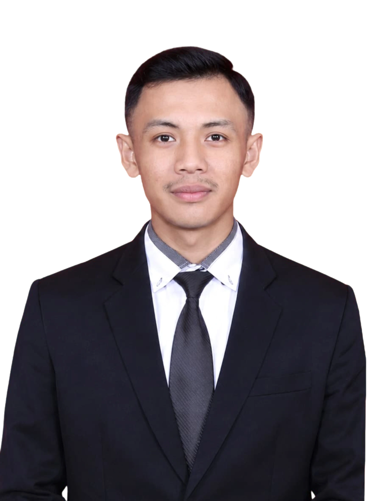

Asesmen Sosial
Memahami kebutuhan individu dan kelompok.
Faliq Azhar Abdurrahman, S.Tr.Sos.
Bekerja dengan empati.
Bergerak untuk perubahan.

Saya lulusan Sarjana Terapan Pekerjaan Sosial dari Politeknik Kesejahteraan Sosial Bandung. Pengalaman praktik saya meliputi rehabilitasi sosial, pendampingan disabilitas, pemberdayaan masyarakat, serta pendidikan dan pengasuhan.
Melalui pengalaman tersebut saya belajar bahwa pendampingan berawal dari mendengar, memahami kebutuhan, dan membangun kolaborasi yang menghargai setiap individu.
Lihat pengalaman sayaMemahami kebutuhan individu dan kelompok.
Mendukung proses rehabilitasi dan pembinaan.
Berkolaborasi dalam pemberdayaan masyarakat.
Empati, mendengar aktif, dan kerja tim.
Pengalaman yang membentuk cara saya belajar, bekerja, dan mendampingi.
Wisma Yatim Assalam & Pondok Pesantren Baitul Hidayah Bandung
Pembinaan santri, pendampingan hafalan, kedisiplinan, dan pengajaran Bahasa Arab (Mahfudzat).
UPTD PPS Griya Harapan — Dinas Sosial Jawa Barat
Mendukung kegiatan pelatihan vokasional dan pendampingan penerima manfaat dalam pengembangan keterampilan.
Panti Sosial Bina Laras DKI Jakarta
Terlibat dalam proses pertolongan sosial, mulai dari asesmen, perencanaan intervensi, sampai evaluasi dan pendampingan layanan.
Desa Darma, Kabupaten Kuningan
Mendukung identifikasi kebutuhan, asesmen, sosialisasi, dan pelatihan masyarakat.
Satuan Pelayanan Bina Laras Sukarjaya, Sumedang
Mendukung asesmen awal, kegiatan kelompok, serta pendampingan kebutuhan harian dan akses layanan kesehatan.
Kegiatan lapangan, proses belajar, dan ruang kolaborasi yang menjadi bagian dari perjalanan profesional saya.
Pengalaman akademik, pengasuhan, dan organisasi yang memperkaya proses pembelajaran dan kerja bersama.
D4 Pekerjaan Sosial
SMP & SMA
Direktur Jenderal Kesadaran Beragama
Staf Sosial Masyarakat
Staf Divisi Syiar
Ketua Keamanan
Sertifikat dan penghargaan ditampilkan secara penuh sebagai bagian dari portofolio publik.
Dokumen kompetensi formal yang menjadi bagian dari pengembangan profesional.
Terbuka untuk peluang profesional, kolaborasi, dan inisiatif sosial yang membawa manfaat.